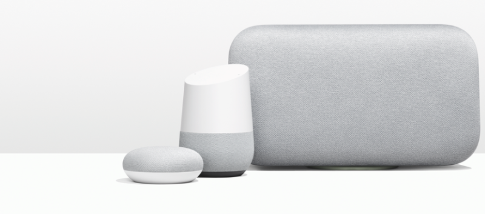

What is Google Home?
The Google Home can play music, but it's primarily designed as a vehicle for Google Assistant -- Google's voice-activated virtual helper that's connected to the internet. The Google Assistant you access via the Home is the same as the one on recent Android phones such as the Google Pixel 3A.
The Google Home is always listening to its environment, but it won't record what you're saying or respond to your commands until you speak one of its preprogrammed wake words -- either "OK, Google" or "Hey, Google."
Google actually has three smart speakers. Google Assistant debuted in the original $100 Google Home. The $50 Google Home Mini squeezes all of the smarts of the original into a smaller, more affordable package. The $300 Google Home Max puts Google's smarts into a speaker designed to deliver premium sound.
All three speakers give you access to the same Google Assistant service. They differ in size, sound quality and price. You use the same Google Home app to set up all three, and they all respond to the same wake words and commands.

In addition to the voice commands, each Google Home speaker has a limited set of physical controls. You can change the volume, mute the microphone, and play or pause your music via a physical interface on the speaker.